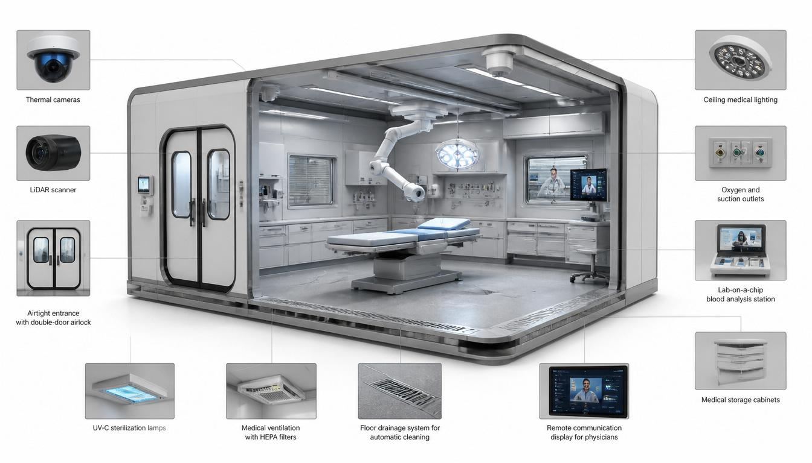
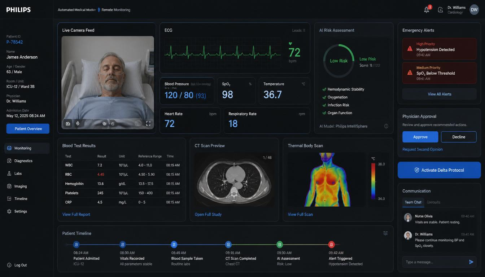
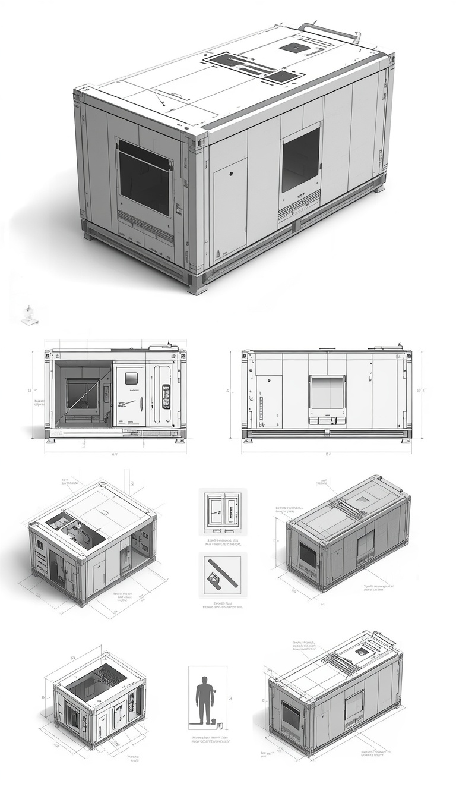

Manipulateur robotisé
Bras contrôlé par le médecin — un « couteau suisse » médical pour pose de cathéter, prélèvements sanguins, désinfection et procédures avec contact.
Développement du concept d'un Module Médical Automatisé (MMA) pour la prise en charge d'urgence des patients issus de groupes sociaux vulnérables.
Les systèmes de santé font face chaque jour à des personnes marginalisées : sans-abri, patients en état d'intoxication alcoolique ou médicamenteuse, personnes sans pièces d'identité et personnes en situation d'hygiène précaire. L'admission crée des risques infectieux pour les autres patients, de l'agressivité envers le personnel et des retards diagnostiques faute de dossiers médicaux et de maladies chroniques non traitées.
Les hôpitaux modernes manquent souvent d'infrastructure pour isoler ces patients en toute sécurité, les évaluer rapidement et assurer un traitement sanitaire. Le concept MMA propose un sas isolé pour l'évaluation initiale, les soins sanitaires et la stabilisation de base — toujours sous la supervision d'un médecin.

Des unités MMA supervisées par un médecin comme sas d'admission isolés devraient améliorer mesurablement la sécurité, la rapidité et la capacité d'accueil.
De l'arrivée de l'ambulance au transfert vers l'hôpital — chaque étape suit un protocole et l'approbation du médecin.
Le patient entre dans le module hermétique. La porte extérieure se verrouille. Le MMA passe en mode autonome sous supervision à distance.
Le scanner recueille les constantes, les données thermiques et la cartographie 3D des blessures. Classification : coopératif, inconscient ou agressif.
Le bras robotisé pose le cathéter IV, prélève le sang, démarre la perfusion saline, fixe oxymètre et brassard tensionnel.
Panneau complet : modèle 3D, scan thermique, constantes, analyses. Le médecin communique par audio et approuve chaque action.
Traitement approuvé par le médecin : glucose en cas d'hypoglycémie, contention souple si nécessaire, douche robotisée et séchage à air chaud pour les soins sanitaires.
Le patient sort par le couloir hermétique. Le module se verrouille, se désinfecte par antiseptique et UV. Prêt pour l'admission suivante en ~15 minutes.
Le MMA n'invente pas une nouvelle science — il intègre des manipulateurs de type da Vinci, robots de service hospitalier, désinfection UV, concepts de diagnostic intelligent et robotique de soins dans un sas d'admission unique.
Bras contrôlé par le médecin — un « couteau suisse » médical pour pose de cathéter, prélèvements sanguins, désinfection et procédures avec contact.
Imagerie thermique, cartographie 3D du corps et capteurs acoustiques classifient l'état du patient en 15–20 secondes.
Analyse sanguine rapide en quelques minutes au lieu d'une heure — résultats transmis directement au poste de contrôle.
Technologie éprouvée post-COVID : désinfection complète du module entre les patients en ~15 minutes.
Positionnement inspiré de ROBEAR — retournements automatiques, prévention des escarres, angles optimaux pour les procédures.
Salle sécurisée à distance : vidéo multi-angles, tableau de bord des constantes, commandes vocales et tactiles.
Architecture, interface et composants conçus pour la sécurité, la stérilité et la dignité.


Le MMA est un outil, pas un substitut. Chaque procédure requiert l'approbation explicite du médecin.
Lire le projet complet (3 chapitres)Découvrez le système de monitoring sous forme de simulation en direct. Suivez les constantes vitales, la détection automatique et le circuit de données en temps réel. Toutes les données sont simulées — ce n'est pas un dispositif médical.
Lancer le simulateur